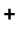

|
|
|
Nr. 461 Ch. Mouton- Rothschild,
Bordeaux. Årgang 1982.
Super-raffinert i lukt og smak, sedertre, lagringstone,
fortsatt i korte bukser. Noe nær perfekt.
Lagres 2-20 år
Kr. 857,-
|
|

|
|
Nr. 5763 Ch. Reynella Cab. Sauv.,
McLaren Vale, Australia. Årgang 1993.
Tett som svarte natten, voldsom fylde, rik.
En vin til brontosaurus-biffen. "A killer". And I like it.
Lagres 0-5 år
Kr. 109,-
|
|
|
|
Nr. 1209 Ch. Latour,
Bordeaux. Årgang 1981.
Sjokolade, tobakk og hele Latour-pakken - minus fylden.
For denne er på den lette siden. Men alt er jo relativt.
Lagres 0-1Lagres 0 år
Kr. 621,-
Nr. 2621 Sassicaia,
Italia. Årgang 1989.
Italias mest berømte vin, her til røverkjøpspris. Trekk for litt
manglende konsentrasjon. Ellers er det meste der.
Lagres 0-5 år
Kr. Årgang 198,-
Nr. 457 Ch. Cos d'Estoumel,
Bordeaux. Årgang 1983.
Typisk 83'er, er på kanten av graven, men gir det den har.
Tobakk, sigarer, kål og en overmoden, rusten frukt.
Lagres Lagres 0 år
Kr. 275,-
Nr. 5773 Delheim Cabernet Sauvignon,
Sør-Afrika. Årgang 1992.
Dyp i lukt og smak, flott sørafrikaner med kaffegrut, intens
frukt og kraftig, lang ettersmak. Det er så bra.
Lagres 0-3 år
Kr. 95,-
Nr. 2314 Burmester's Vintage
Port, Portugal. Årgang 1989.
Dyp, dyp, dyp. Intens. Søt. Konsentrert. Enormt potensial.
Ennå for ung. Billig for kvaliteten. Kjøp denne for lagring.
Lagres 5-50 år
Kr. 209,-
Vitis Sangiovese
Italia.
Noe nær en fulltreffer på dette prisnivået. Uten de tørrende sluttsyrene som endel Sangioveser kan ha. Den har en fin, saftig fruktsødme.
Kr. 61,-
Montecillo Vina Cumbrero, Bodegas Montecillo,
Rioja, Spania. Årgang 1991.
God farve, bra fylde, bær og vanilje i skjønn forening, fint integrerte smaksnyanser. Prisgunstig.
Kr. 78,-
Faustino 1 Gran Reserva, Bodegas Faustino Martinez,
Rioja, Spania. Årgang 1987.
God frukt, fin krydder, lagringstone, litt bjørnebær med vaniljedryss. Fint integrerte smaker.
Kr. 115,-
1987 Vina Arana Reserva, La Rioja Alta,
Rioja, Spania. Årgang 1987.
Slik skal det være. Fylde og kraft bak all vaniljen og eikepreget. God nok frukt til å bære fatlagringen.
Kr. 115,-
|

|
|
Nr. 5795 Caramany, Côtes du Roussillon,
Frankrike. Årgang 1994.
Hvilken strålende og sjarmerende urtekompott, fin og saftig
konsentrert med spennende krydder og varme.
Lagres 0-2 år
Kr. 70,-
Vitis Pinotage,
Sør-Afrika.
En fin, fyldig sak med litt lagret fruktsødme og godt krydder. En solid liten viltvin.
Kr. 62,-
Vitis Tempranillo,
Rioja, Spania.
Snill, harmonisk - og relativt fyldig. Bra
Kr. 60,-
Vina Alberdi, La Rioja Alta,
Spania. Årgang 1989.
Fullblods Rioja-preg over denne, varm vanilje drysset med kanel og krydder.
Kr. 96,-
|
|
|
|
Nr. 5691 Ch. Saint Robert,
Graves, Frankrike. Årgang 1992.
Moden, fyldig og kjøttfull i smaken. Fint krydret. Trekk for
prisen.
Lagres 0-5 år
Kr. 114,-
Nr. 5764 Bellingham Cap. Sauv.,
Sør-Amerika. Årgang 1993.
Dyp farve, fyldig, fortsatt lassevis med relativt finkornede
tanniner, bra frukt, ikke dum.
Lagres 1-3 år
Kr. 93,-
Nr. 5791 Vino Nobile di Montepulciano Riserva,
Toscana. Årgang 1988.
Fin, var smak med anstrøk av sødme og eleganse. Ingen
stramme syrer her i gården.
Lagres 0-2 år
Kr. 117,-
Nr. 477 Belgrave,
Bordeaux. Årgang 1988.
Klassisk Bordeaux- stil med solbær og pirrende tanniner.
Prisen er et hakk i overkant.
Lagres 2-5 år
Kr. 130,-
Vitis Cabernet Sauvignon,
Frankrike.
Tålig bra, men ikke helt på topp. Ganske snill sak, med bare små solbærtoner og ikke noe kraft å snakke om. Litt fruktsødme.
Kr. 60,-
Marqués de Caceres, Union Viti-Vinicola,
Rioja, Spania. Årgang 1992.
Mørk og ganske tett i farven, bra fylde og konsentrasjon, friske bær. Harmonisk.
Kr. 89,-
|
|
|
|
Nr. 5784 La Vielle Ferme Reserve,
Rhône, Frankrike. Årgang 1993.
Fiolett-skjær i en kjøttfull og søtlig-moden Rhône-vin med
bra harmoni og velsignet rundhet.
Lagres 0-5 år
Kr.98,-
Nr. 5770 Ochagavia Cabernet
Merlot, Chile. Årgang 1994.
Fyldig, aromatisk, fint og mykt Cabernet-preg, typisk
chilener.
Lagres 0-3 år
Kr. 65,-
Nr. 5729 Cap Constantia,
Sør- Afrika
Sterkvin som er kraftig og søt, med fin smaksrikdom.
En gammel pol- schlager som nå er tilbake igjen.
Lagres 0-5 år
Kr. 122,-
Nr. 5768 Santa Digna Cap. Sauv.,
Chile. Årgang 1993.
Miguel Torres' Chile-viner er litt kjedelige, men denne har
bra fylde og frukt og et fint integrert eikeslør.
Lagres 0-2 år
Kr. 79,-
Nr. 474 Ch. Lynch- Moussas,
Bordeaux. Årgang 1986.
Litt syrespiss i lukt og smak, velutviklet og moden, men litt
for mager etter min smak. Kanskje magnum'en er bedre?
Lagres 0 år
Kr. 122,- /254,- (Magnum)
Nr. 5792 Ochoa Tempranillo,
Spania. Årgang 1992.
Rødbruk, typeriktig tempranillo med vanilje og kanel, varme
jordtoner.
Lagres 0-3 år
Kr. 90,-
Nr. 5785 Neethlingshof Pinotage,
Sør-Afrika. Årgang 1992.
Mørk i farven, ganske fyldig, litt brent krydder i ettersmaken.
Men det finnes mange bedre pinotage'er enn denne.
Lagres 0-3 år
Kr.87,-
Nr. 5779 Bairrada Garrafeira,
Portugal. Årgang 1990.
Krydder, fylde og en liten syrlighet i vaniljefatsødmen.
Ganske bra
Lagres 0-1 år
Kr. 87,-
Faustino VII, Bodegas Faustino Martinez,
Rioja, Spania. Årgang 1992.
Harmonisk, rund og blid. Mangler litt kjøtt og tyngde.
Kr. 78,-
Faustino V Reserva, Bodegas Faustino Martinez,
Rioja, Spania. Årgang 1990.
Harmonisk, moden, bra frukt - mangler litt konsentrasjon.
Kr. 94,-
Murua Reserva, Bodegas Murua,
Rioja, Spania. Årgang 1990.
Bodega-lukt, litt krydder og gran med et anstrøk av vanilje. Noe tynn.
Kr. 96,-
Lan Reserva, Bodegas Lan,
Rioja, Spania. Årgang 1988.
Vanilje- og eikepreg i en middels fyldig og tradisjonell vin. Ingen usmak. Men for dyr.
Kr. 106,-
|
|
|
|
Nr. 5796 Portico,
Portugal
Billigvin med solide kvaliteter av fylde og krydret ettersmak.
Konkurrerer med bulgarerne på pris.
Lagres 0-2 år
Kr. 65,-
Nr. 6153 Nebbiolo delle Langhe,
Piemonte. Portugal. Årgang 1994.
En småelegant liten sjarmør, mye smak for pengene, litt
rosinaktig sødme. Litt tynn i farve og smak. Billig og god.
Lagres 0 år
Kr. 68,-
Nr. 5789 Villa Martis, Piemonte,
Italia. Årgang 1992.
Lys i farven, litt søtlig anis i smaken. Litt spesiell. Trekk for
prisen
Lagres 0 år
Kr. 114,-
Nr. 6156 La Loba,
Spania
Bløt, saftig, rund og lettdrikkelig venninnevin med et slags
vampyraktig kvinnefjes stirrende ut fra etiketten.
Lagres 0 år
Kr. 55,-
Nr. 5775 Senorio de Guadianeja Reserva.
Årgang 1991.
God rød, snill vanilje/kanel, bra frukt. Ingen usmak her. Men
heller ikke så vanvittig spennende.
Lagres 0 år
Kr.82,-
Castillo Rioja, Bodegas Palacio,
Rioja, Spania. Årgang 1990.
Vaniljeslør, fin balanse, lett krydder. Småpen.
Kr. 72,-
Siglo Saco, A.G.E. Bodegas Unidas,
Rioja, Spania. Årgang 1992.
Nøytral, pregløs, ganske harmonisk. Skremmer ingen. Fin balanse.
Kr. 78,-
Ramon Bilbao, Bodegas Ramon Bilbao,
Rioja, Spania. Årgang1992
Finurlig vanilje, litt syltetøy, krydder. Behagelig. Mangler litt frukt.
Kr. 81,-
Lagunilla Reserva, Bodegas Lagunilla,
Rioja, Spania. Årgang1992
Noe "eiketrøtt" i stilen, ellers masse krydder. Mangler litt kjøttfylde. Men vin og varm ettersmak. For dyr.
Kr. 97,-
|
|
|
|
Nr. 5685 Le Benjamin de Beauregard,
Bordeaux. Årgang 1993.
2. vinen til Ch. Beauregard, typeriktig, men kjedelig.
Og skikkelig dyr til kvaliteten.
Lagres 1-5 år
Kr. 149,-
Nr. 5692 Ch. Villotte,
Bordeaux. Årgang 1993.
Middels fyldig, middels kraftig - og heldigvis middels priset.
Vel, kanskje litt i overkant.
Lagres 0-2 år
Kr. 87,-
Campo Viejo, Bodegas Campo Viejo.
Rioja, Spania. Årgang 1992.
Rødbrun, litt vanilje, tradisjonell - litt kjedelig uten karakter. Men ingen dårlige bismaker heller.
Kr. 73,-
|
|
|
|
Nr. 5787 Dom. des Sénéchaux Châteauneuf-du-Pape.
Årgang 1993.
Syltetøy av røde bær. Søtlig, men for mager og dyr.
Lagres 0-2 år
Kr. 150,-
Vitis Merlot,
Grei, men litt for skrapet og mager i smaken. Litt kjedelig.
Kr. 55,-
Vinadrian, Luis Gurpegui Muga,
Rioja, Spania. Årgang 1993.
Sjarmerende bouquet, men litt lett og tynn i smaken.
Kr. 66,-
Preferido, Bodegas Berberana.
Rioja, Spania. Årgang 1994.
Noe dypere bærpreg og ganske frisk. Litt syltetøysaktig. "Donald-brus" for voksne.
Kr. 67,-
|
|
|
|
Nr. 1702 Ch. Blaignan,
Bordeaux. Årgang 1988.
Kjedelig og tynn, overmoden og nær stupet, etter min oppfatning.
Lagres 0 år
Kr. 104,-
|
|
|
|
Nr. 6159 Banda Dorada,
Spania. Årgang 1994.
Uren lukt, støvete innestengt. Dårlige fat er kanskje det som
lager denne dårlige versjonen av Viura-druen.
Lagres 0 år
|
|
|
|
Mendizabal Tinto, Bodegas Heredad de Baroja.
Rioja. Spania. Årgang 1994.
Støvete bouquet, smaker rødbeter og kål. Den funklende farven er det eneste positive.
Kr. 71,-
|